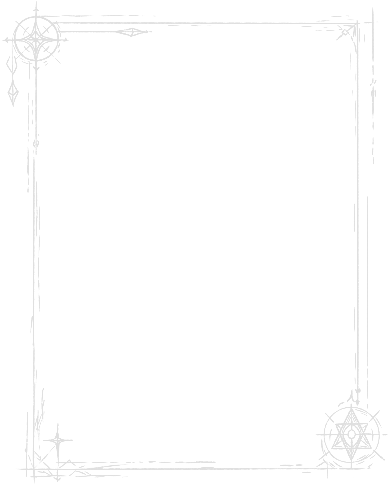

Добро пожаловать, путники!
Меня зовут Андрей (Или Пепс). Я мастер настольно-ролевых игр, и мой путь в НРИ начался задолго до того, как я впервые сел за экран мастера.
Около года назад я начал водить на платной основе, но до этого большую часть времени проводил за созданием сеттинга и изучением правил, классов и программ для D&D — иногда в одиночку, иногда с друзьями. Это научило меня главному: НРИ — это не просто настольная игра, это совместное творчество. Историю создают все, кто сидит за столом, а мастер — это арбитр, что держит мир на плечах.
За это время я успел:
1. Разработать собственную вселенную в жанре научного фэнтези, по которой успешно вожу сессии уже долгое время.
2. Придумать множество авторских историй, опираясь на готовые модули, чужие кампании и художественные произведения.
3. Провести сотни часов «за столом» вместе с игроками, создавая уникальные и иммерсивные истории.